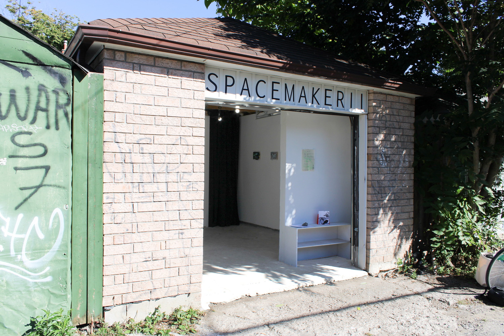
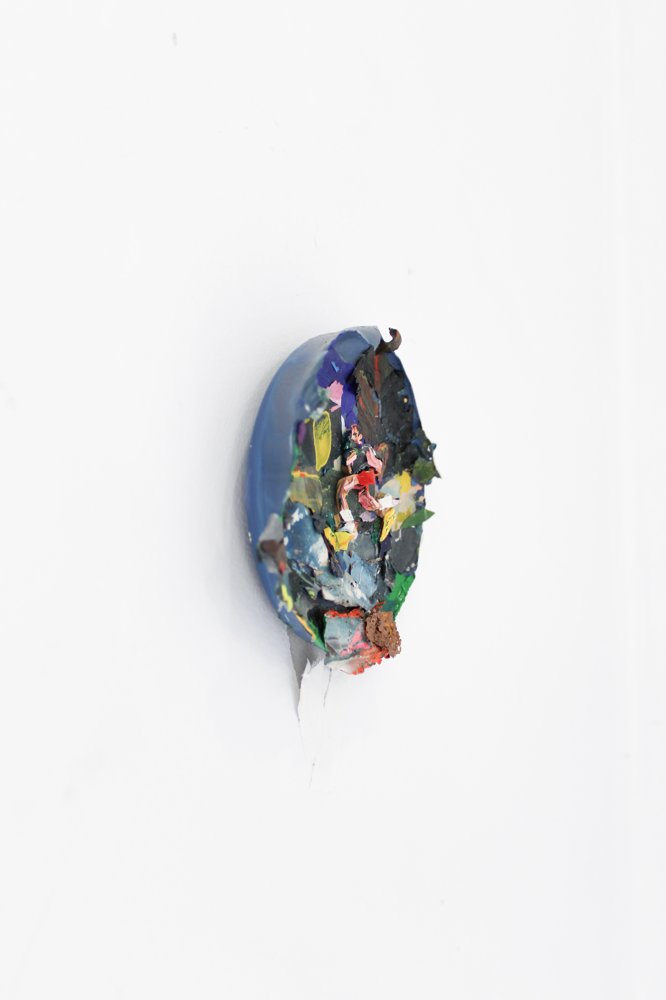
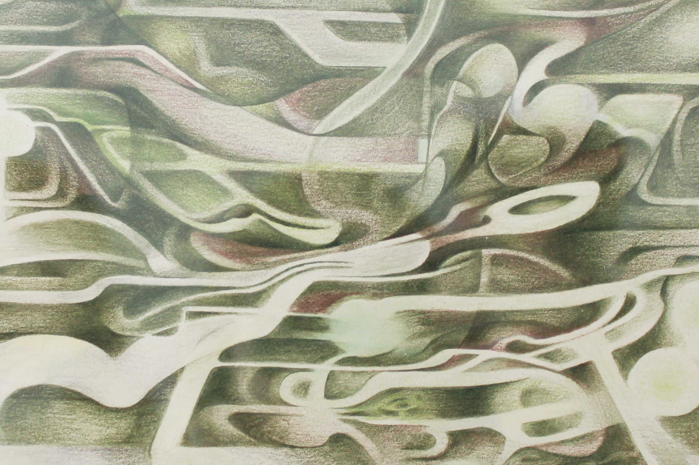

The Nest Channel
A solo project by Soledad Fátima Muñoz
Curated by Benjamin de Boer
September 2 - September, 2022
Hearth presents “The Nest Channel”, an exhibition featuring new work by artists Hiromi Nakatsugawa, Leeay Aikawa, and Jos Theriault. For a month we called SPACEMAKER II our home, and here we enunciate in the voice of The Channeller— one who takes the middle path between total reception of environmental energy and the hermetic production of internal power. This arrangement beckons our dwelling’s intuitive moments, be it through plumbing the depths of the body’s internal landscapes, navigating the grief architecture of the avant-city, or reconciling with the possibility of non-human afterlife.
1 / 22

2 / 22

3 / 22

4 / 22

5 / 22

6 / 22

7 / 22

8 / 22

9 / 22

10 / 22

11 / 22

12 / 22

13 / 22

14 / 22

15 / 22

16 / 22

17 / 22

18 / 22

19 / 22

20 / 22

21 / 22

22 / 22